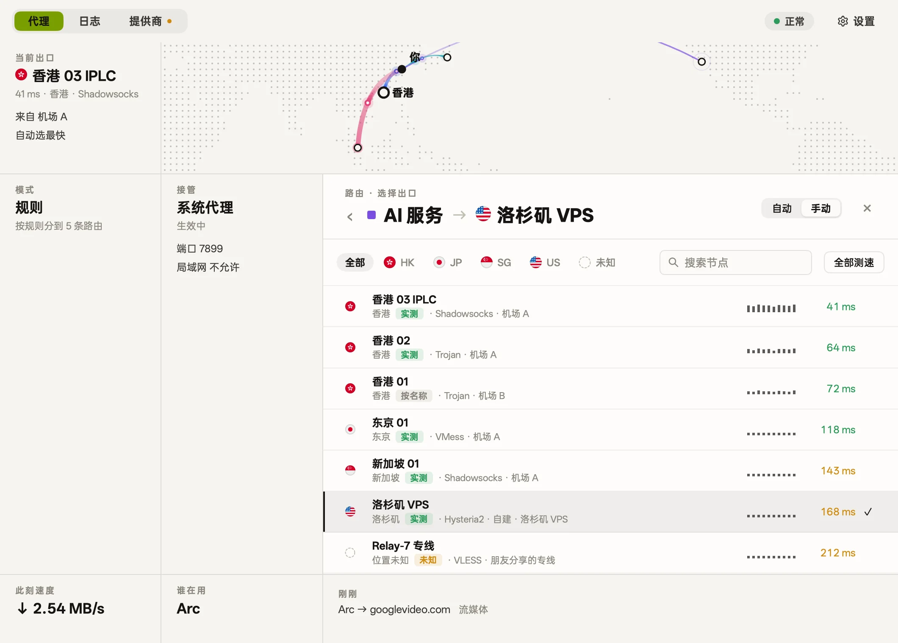
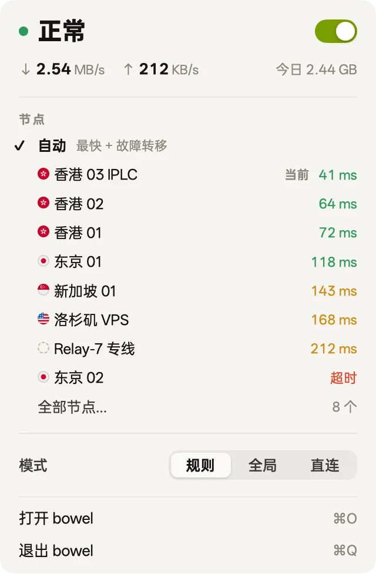
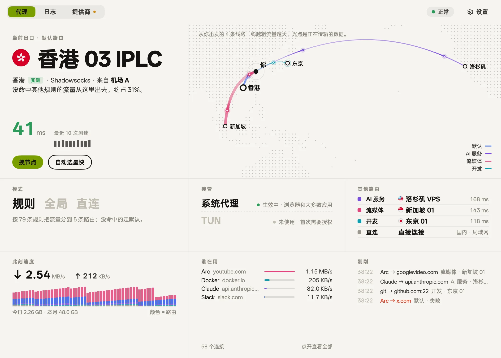
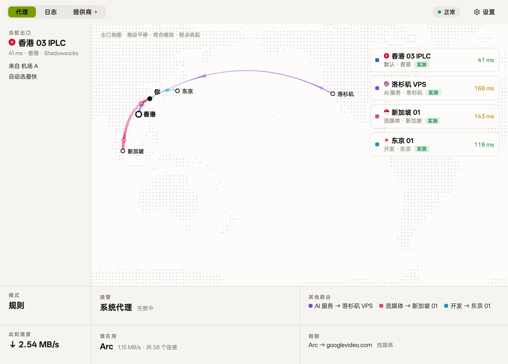
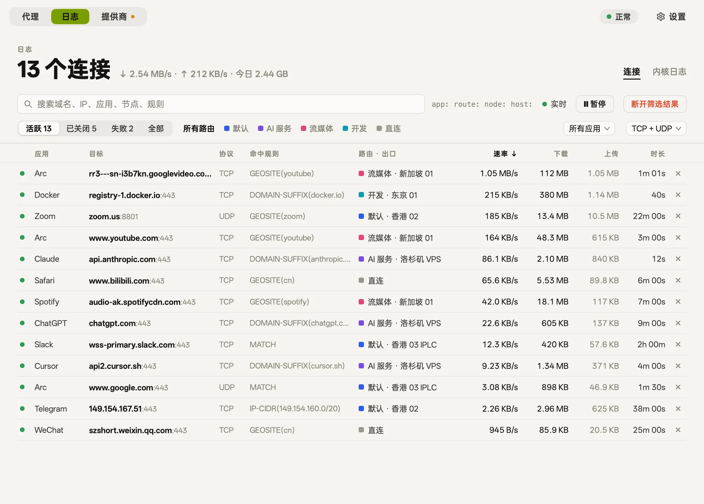
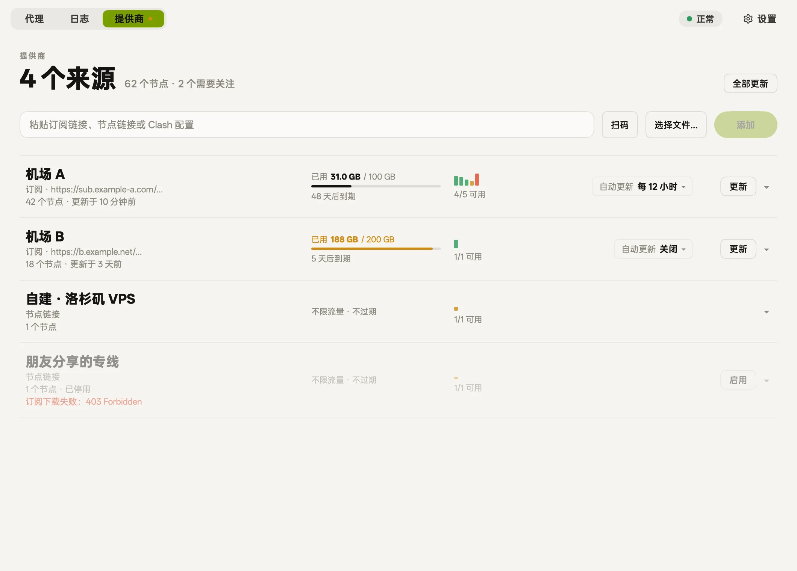
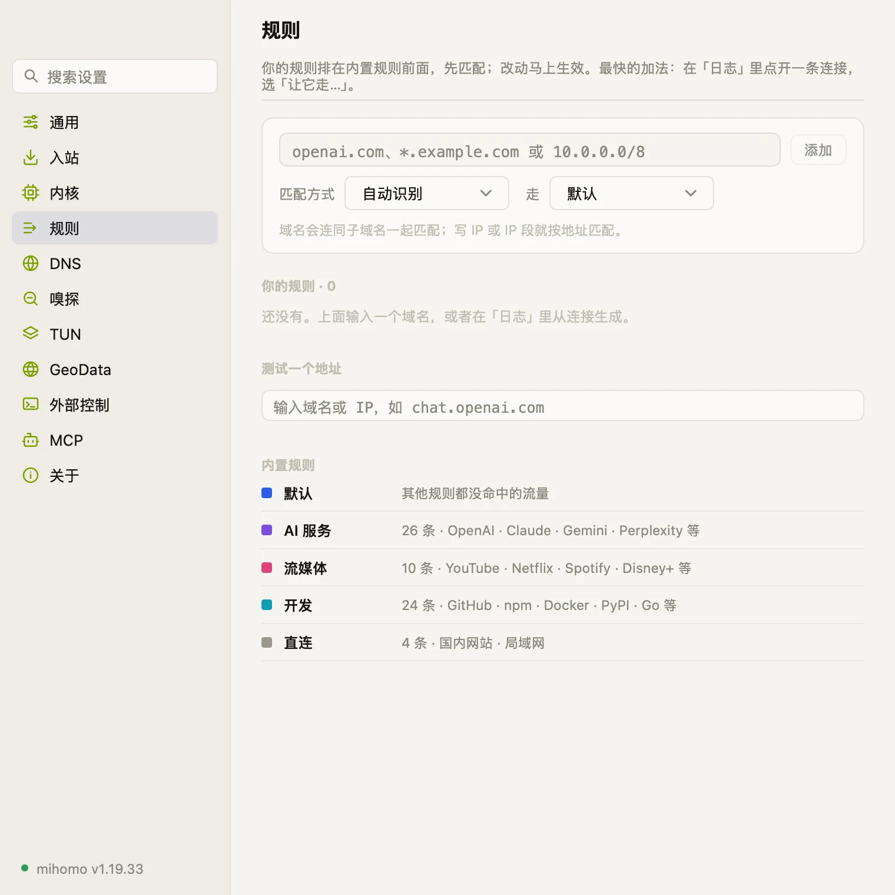
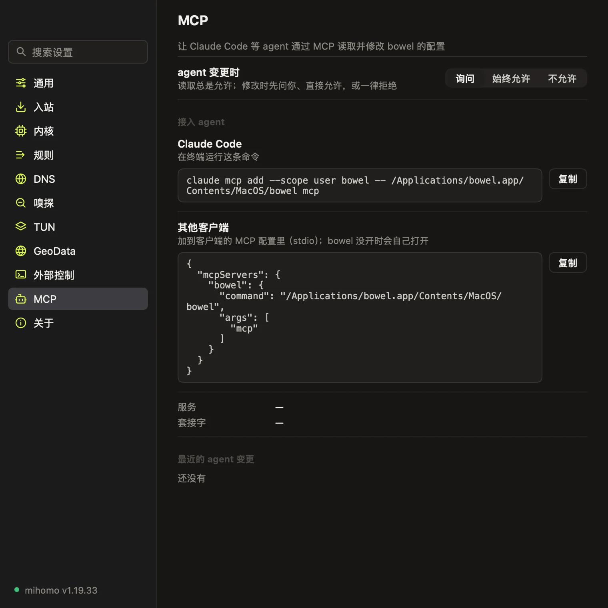

路由Routes
路由Routes
按日常、AI、流媒体等用途划分路由，给每条路由挑选出口节点。Group traffic by purpose like AI or streaming, and choose an exit node for each route.
- 默认Default
- AI 服务AI services
- 流媒体Streaming
- 开发Development
- 直连Direct

macOS 代理客户端 · 基于 mihomomacOS proxy client · powered by mihomo
管理节点、路由和规则，查看每条连接，还有六种皮肤可选。 Manage nodes, routes and rules, see every connection, and choose from six skins.
macOS 12+ · Apple 芯片 · 免费 · 已通过 Apple 公证macOS 12+ · Apple silicon · Free · Notarized by Apple

皮肤Skins
配色、字体、圆角和质感一起变，底层功能完全一样。Colors, typography, corners, and texture all change together, while core features stay identical.
暖白纸面与墨色，克制安详Warm white paper and deep ink, quiet and minimal 新闻纸感、衬线大标题与朱红点缀Newsprint paper, serif headlines, and vermilion touches 绿色荧光老终端：等宽字、扫描线与利落直角Vintage green phosphor terminal: monospace, scanlines, and hard corners 深紫底色上发光的品红与青色Glowing magenta and cyan over deep midnight purple 工程蓝底、背景网格与工程制图字体Engineering blue, background grid, and technical type 樱花粉调、圆润边角与轻柔飘落的花瓣Cherry blossom pink, soft corners, and falling petals

路由Routes
按日常、AI、流媒体等用途划分路由，给每条路由挑选出口节点。Group traffic by purpose like AI or streaming, and choose an exit node for each route.

出口位置Exit locations
通过节点向 Cloudflare 发送请求，测出真实的出口位置。Queries Cloudflare through each node to measure its actual exit location.

活动Activity
查看各个应用的实时连接与流量，也可以随时把网站指给其他路由。View live connections and traffic by app, and adjust routes on the fly.
api.openai.com → openai.com → AI 服务AI services

Provider
支持导入订阅链接、节点链接、配置文件或通过扫码添加节点。Import nodes via subscription URLs, node links, config files, or QR scans.
vmess:// · vless:// · trojan:// · ss:// · hysteria2:// · tuic://

规则Rules
支持按域名、关键词或 IP 段添加规则，并能直接测试分流效果。Add rules by domain, keyword, or IP block, and test routing directly.

MCP
自带 MCP 服务供 Agent 读取状态和排查问题，修改设置默认弹窗询问。Includes a built-in MCP server for agents to inspect status, and asks for confirmation by default before changing settings.
$ claude mcp add --scope user bowel -- \
/Applications/bowel.app/Contents/MacOS/bowel mcp
开启后把当前 Mac 作为局域网网关，供电视、手机或游戏机使用。Turn this Mac into a local gateway for your TV, phone, or console.
接管不走系统代理的程序，首次开启时需要一次管理员授权。Route traffic from apps that bypass system proxies, requiring admin permission once.
在菜单栏切换接管状态、模式与出口节点，图标不显示跳动的网速。Switch proxy status, modes, and exit nodes from the menu bar without jittery speed numbers.
界面由 Go 编写，GPU 直接渲染，没有 WebView。Written in Go and rendered directly by the GPU, with no WebViews.
支持按 ⌘F 快速搜索和定位各项设置。Press ⌘F to search across all settings.
简体中文 · 繁體中文 · English · 日本語
macOS 12+ · Apple 芯片 · 免费 · 已通过 Apple 公证macOS 12+ · Apple silicon · Free · Notarized by Apple
.dmg，把 bowel 拖入「应用程序」文件夹。Open the .dmg and drag bowel into Applications.